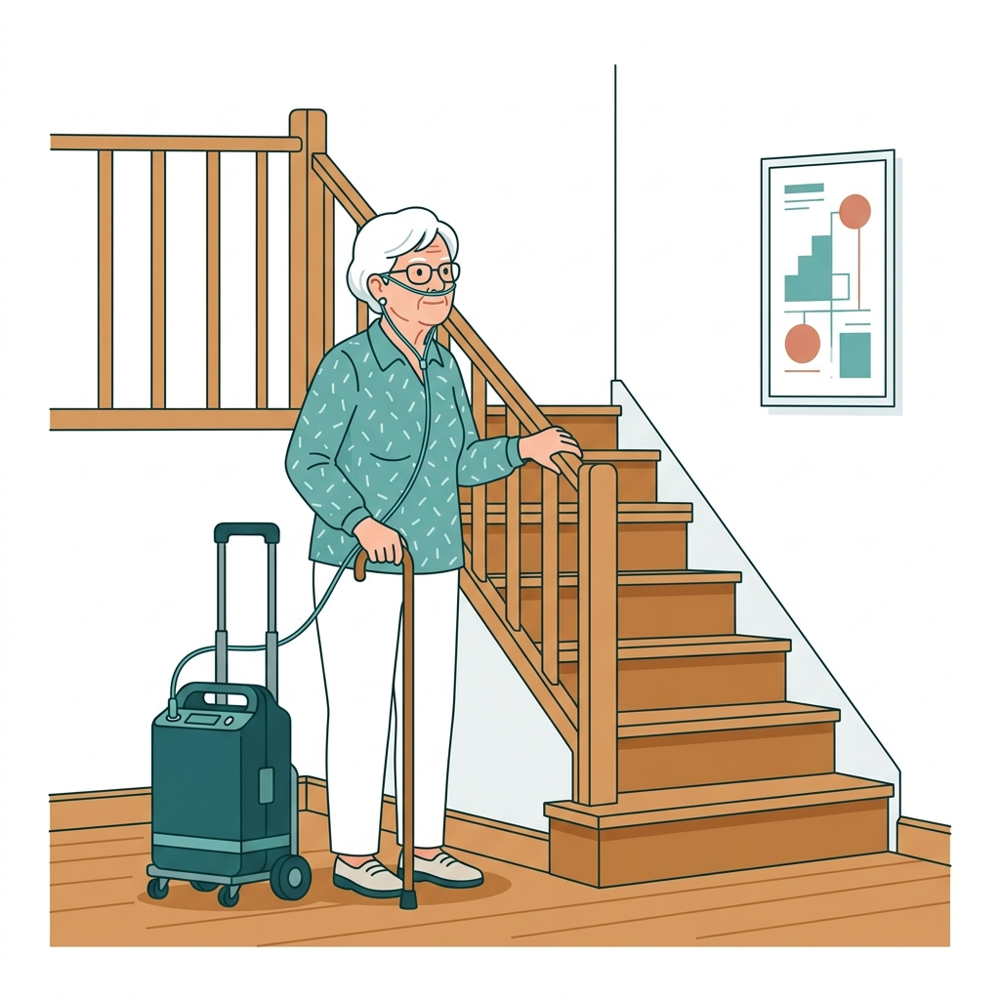
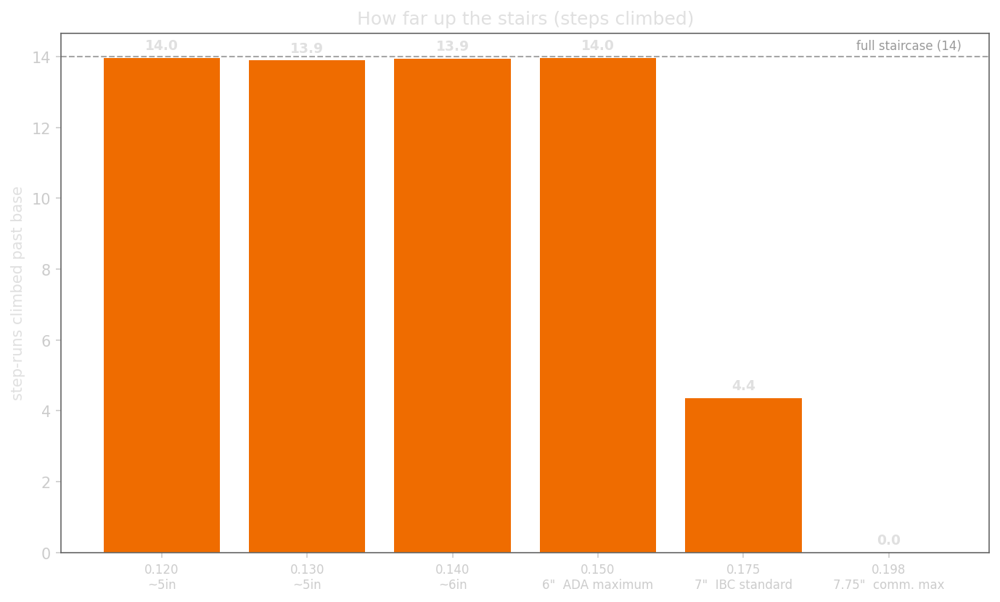
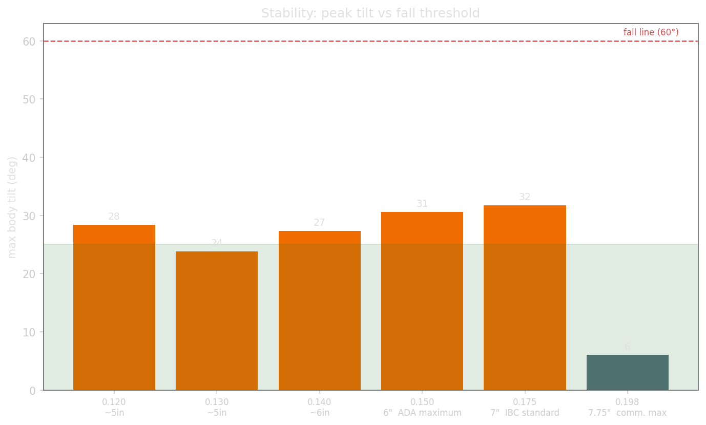
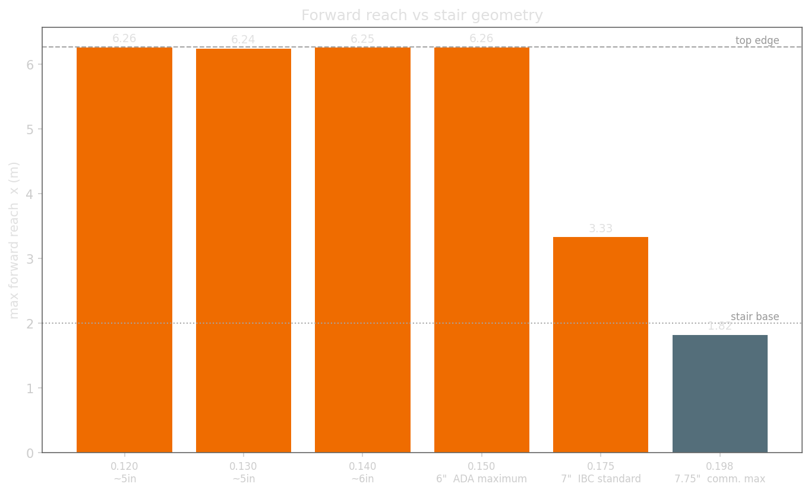
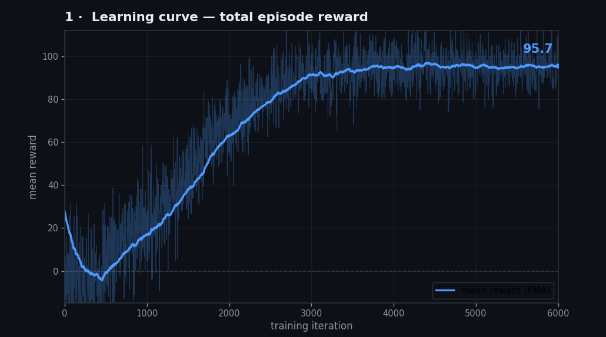
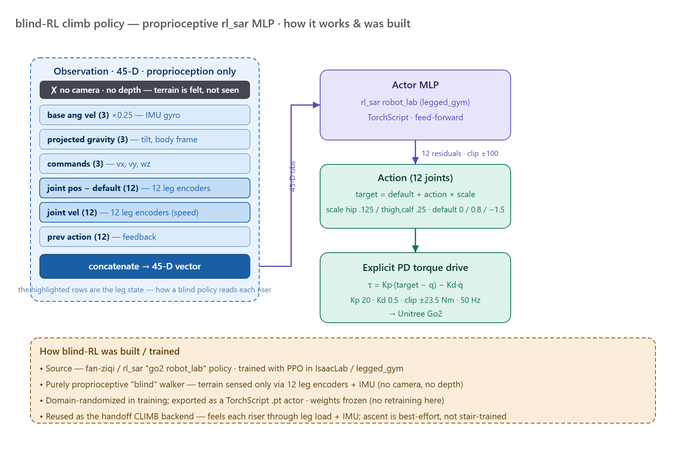

South Florida
Patients on long-term oxygen therapy must haul a portable concentrator everywhere — stairs are the highest fall-risk, highest-exertion obstacle in the home.

- Older stair-users show higher stride variability & fall risk (Startzell 2000; Hausdorff 1997).
- Our robot carries the ~2.2 kg concentrator, follows autonomously, detects stairs, and climbs — beside the patient.
- Both hands freed for the railing; robot handles the load.

(~32 % of trunk mass)


(0.12–0.15 m risers)
successfully topped
(threshold: 60°)


| Riser | Steps (/ 14) | Peak Tilt | Outcome |
|---|---|---|---|
| 0.120 m (~5″) | 14.0 | 28° | ✔ Full climb |
| 0.130 m (~5″) | 13.9 | 24° | ✔ Full climb |
| 0.140 m (~6″) | 13.9 | 27° | ✔ Full climb |
| 0.150 m (6″ ADA) | 14.0 | 31° | ✔ Full climb |
| 0.175 m (7″ IBC) | 4.4 | 32° | ✗ Partial |
| 0.198 m (7.75″) | 0.0 | 6° | ✗ No climb |
Robot topped the ADA-maximum (0.15 m) staircase end-to-end in simulation, staying upright throughout (peak tilt ≤31°, well below the 60° fall threshold).

About 1.5 million Americans rely on long-term home oxygen therapy, and stairs are consistently the task they fear most — a fall risk that can confine a patient to one floor of their own home. This project builds a sensor-guided quadruped that walks beside the patient, carries the oxygen equipment, and climbs the stairs on its own — so the patient never has to face a staircase alone.




- End-to-end follow → detect → hand-off → climb stack validated in NVIDIA Isaac Sim on a shared sim/real codebase (401 passing tests).
- Successfully reaches the top of the 0.15 m (ADA-maximum) staircase end-to-end in the best demo.
- Peak tilt ≤31° across all successful runs — well below the 60° fall threshold.
- Nose-down gait — blind-RL climber pitches forward; a gait-posture problem, not a handoff bug.
- High CoG — O₂ carrier raises center of gravity; wider stance being explored.
- Safety grade-gate — stance locking suppressed mid-climb; min observed clearance 0.209 m vs. 0.55 m target.
- Hardware climb unproven — physical Go2 validation is the active next step.
The authors thank Dr. Kearns and USF COE faculty for guidance throughout this project. Simulation via NVIDIA Isaac Sim. Robot: Unitree Go2. Policies adapted from robot_lab / IsaacLab and PGTT (arXiv:2510.18348).
[1] Startzell et al. (2000). Stair negotiation in older people. J Am Geriatr Soc, 48(5).
[2] Hausdorff et al. (1997). Gait variability and fall risk. Arch Phys Med Rehabil, 78(3).
[3] Zhuang et al. (2025). PGTT. arXiv:2510.18348. [4] Wang et al. (2023). YOLO-World. arXiv:2401.17270.
[5] Zhang et al. (2022). ByteTrack. ECCV 2022. [6] NVIDIA Isaac Sim · Unitree Go2 EDU · Intel RealSense D435.